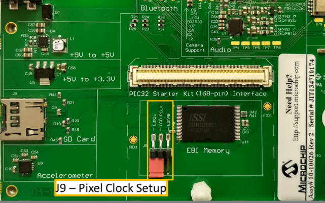

|
MPLAB® Harmony Graphics Suite
|
|
MPLAB® Harmony Graphics Suite
|

In this configuration, the application is executed within an OS task context that is scheduled by the FreeRTOS scheduler. When the application task is executed, it calls the HAL APIs to initialize the HAL data structures and setup the HAL graphics layers. These API calls translate into GLCD driver setup and initialization calls that configure the GLCD. After the initialization phase, the application transitions into the paint phase where it draws an image to the frame buffer in external DDR. The application uses a HAL API to get the start address of the frame buffer in the DDR and writes the pixel data directly to the frame buffer memory address.
The GLCD hardware peripheral continuously refreshes the display panel with data from the frame buffer and the images are shown on the display.

The Project Graph diagram below shows the Harmony components that are included in this application. Lines between components are drawn to satisfy components that depend on a capability that another component provides.
Adding the PIC32MZ DA Starter Kit BSP and Legato Graphics w/ PDA TM4301B Display Graphics Template component into the project graph will automatically add the components needed for a graphics project and resolve their dependencies. It will also configure the pins needed to drive the external peripherals like the display and the touch controller.
The parent directory for this application is gfx/apps/legato_quickstart. To build this application, use MPLAB X IDE to open the gfx/apps/legato_quickstart/firmware/legato_qs_mzda_intddr_sk_meb2_tm4301b.X project file.
The following table lists configuration properties:
| Project Name | BSP Used | Graphics Template Used | Description |
|---|---|---|---|
| blank_qs_mzda_extddr_sk_meb2_wqvga_freertos.X | PIC32MZ DA Starter Kit | Legato graphics w/ PDA TM4301b Display | Legato graphics on PIC32MZ DA with Internal DDR Starter Kit, MEBII and PDA TM4301b Display. |
**_NOTE:_** This application may contain custom code that is marked by the comments // START OF CUSTOM CODE ... and // END OF CUSTOM CODE. When using the MPLAB Harmony Configurator to regenerate the application code, use the "ALL" merging strategy and do not remove or replace the custom code.
The final setup should be:
Configure the hardware as follows:

Connect the PIC32MZ DA Starter Kit to the MEB II board

Power up the board by connecting the power adapter to J3 power connector on the MEB II board or a powered USB cable to the USB DEBUG port on the Starter Kit board.
Once the board is powered on, the application will run and show the following image on the display panel.

 1.8.18
1.8.18